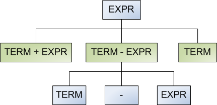
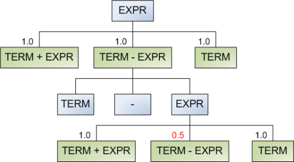
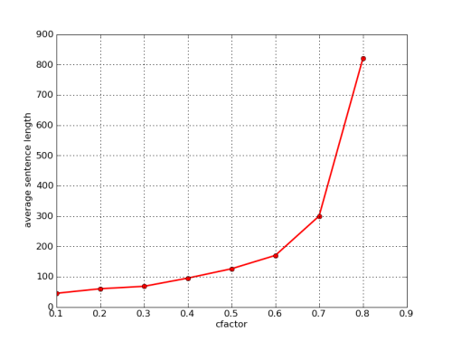

Sometimes it's interesting to randomly generate a large amount of valid sentences from a context free grammar. The best use for this is automated stress-testing of parsers for those grammars [1].
So how would you generate sentences?
Simple recursive algorithm
The first approach that springs to mind is a simple recursive traversal of the grammar, choosing productions at random. Here's the algorithm with some infrastructure:
class CFG(object):
def __init__(self):
self.prod = defaultdict(list)
def add_prod(self, lhs, rhs):
""" Add production to the grammar. 'rhs' can
be several productions separated by '|'.
Each production is a sequence of symbols
separated by whitespace.
Usage:
grammar.add_prod('NT', 'VP PP')
grammar.add_prod('Digit', '1|2|3|4')
"""
prods = rhs.split('|')
for prod in prods:
self.prod[lhs].append(tuple(prod.split()))
def gen_random(self, symbol):
""" Generate a random sentence from the
grammar, starting with the given
symbol.
"""
sentence = ''
# select one production of this symbol randomly
rand_prod = random.choice(self.prod[symbol])
for sym in rand_prod:
# for non-terminals, recurse
if sym in self.prod:
sentence += self.gen_random(sym)
else:
sentence += sym + ' '
return sentence
CFG represents a context free grammar. It holds productions in the prod attribute, which is a dictionary mapping a symbol to a list of its possible productions. Each production is a tuple of symbols. A symbol can either be a terminal or a nonterminal. Those are distinguished as follows: nonterminals have entries in prod, terminals do not.
gen_random is a simple recursive algorithm for generating a sentence starting with the given grammar symbol. It selects one of the productions of symbols randomly and iterates through it, recursing into nonterminals and emitting terminals directly.
Here's an example usage of the class with a very simple natural-language grammar:
cfg1 = CFG()
cfg1.add_prod('S', 'NP VP')
cfg1.add_prod('NP', 'Det N | Det N')
cfg1.add_prod('NP', 'I | he | she | Joe')
cfg1.add_prod('VP', 'V NP | VP')
cfg1.add_prod('Det', 'a | the | my | his')
cfg1.add_prod('N', 'elephant | cat | jeans | suit')
cfg1.add_prod('V', 'kicked | followed | shot')
for i in xrange(10):
print cfg1.gen_random('S')
And here are some sample statements generated by it:
the suit kicked my suit
she followed she
she shot a jeans
he shot I
a elephant followed the suit
he followed he
he shot the jeans
his cat kicked his elephant
I followed Joe
a elephant shot Joe
The problem with the simple algorithm
Consider the following grammar:
cfgg = CFG()
cfgg.add_prod('S', 'S S S S | a')
It has a single nonterminal, S and a single terminal a. Trying to generate a random sentence from it sometimes results in a RuntimeError exception being thrown: maximum recursion depth exceeded while calling a Python object. Why is that?
Consider what happens when gen_random runs on this grammar. In the first call, it has a 50% chance of selecting the S S S S production and a 50% chance of selecting a. If S S S S is selected, the algorithm will now recurse 4 times into each S. The chance of all those calls resulting in a is just 0.0625, and there's a 0.9375 chance that at least one will result in S and generate S S S S again. As this process continues, chances get slimmer and slimmer that the algorithm will ever terminate. This isn't good.
You may now think that this is a contrived example and real-life grammars are more well-behaved. Unfortunately this isn't the case. Consider this (rather ordinary) arithmetic expression grammar:
cfg2 = CFG()
cfg2.add_prod('EXPR', 'TERM + EXPR')
cfg2.add_prod('EXPR', 'TERM - EXPR')
cfg2.add_prod('EXPR', 'TERM')
cfg2.add_prod('TERM', 'FACTOR * TERM')
cfg2.add_prod('TERM', 'FACTOR / TERM')
cfg2.add_prod('TERM', 'FACTOR')
cfg2.add_prod('FACTOR', 'ID | NUM | ( EXPR )')
cfg2.add_prod('ID', 'x | y | z | w')
cfg2.add_prod('NUM', '0|1|2|3|4|5|6|7|8|9')
When I try to generate random sentences from it, less than 30% percent of the runs terminate [2].
The culprit here is the ( EXPR ) production of FACTOR. An expression can get expanded into several factors, each of which can once again result in a whole new expression. Just a couple of such derivations can be enough for the whole generation process to diverge. And there's no real way to get rid of this, because ( EXPR ) is an essential derivation of FACTOR, allowing us to parse expressions like 5 * (1 + x).
Thus, even for real-world grammars, the simple recursive approach is an inadequate solution. [3]
An improved generator: convergence
We can employ a clever trick to make the generator always converge (in the mathematical sense). Think of the grammar as representing an infinite tree:
The bluish nodes represent nonterminals, and the greenish nodes represent possible productions. If we think of the grammar this way, it is obvious that the gen_random method presented earlier is a simple n-nary tree walk.
The idea of the algorithm is to attach weights to each possible production and select the production according to these weights. Once a production is selected, its weight is decreased and passed recursively down the tree. Therefore, once the generator runs into the same nonterminal and considers these productions again, there will be a lower chance for the same recursion to occur. A diagram shows this best:
Note that initially all the productions of expr have the same weight, and will be selected with equal probability. Once term - expr is selected, the algorithm takes note of this. When the same choice is presented again, the weight of term - expr is decreased by some factor (in this case by a factor of 2). Note that it can be selected once again, but then for the next round its weight will be 0.25. This of course only applies to the same tree branch. If term - expr is selected in some other, unrelated branch, its weight is unaffected by this selection.
This improvement solves the divergence problem of the naive recursive algorithm. Here's its implementation (it's a method of the same CFG class presented above):
def gen_random_convergent(self,
symbol,
cfactor=0.25,
pcount=defaultdict(int)
):
""" Generate a random sentence from the
grammar, starting with the given symbol.
Uses a convergent algorithm - productions
that have already appeared in the
derivation on each branch have a smaller
chance to be selected.
cfactor - controls how tight the
convergence is. 0 < cfactor < 1.0
pcount is used internally by the
recursive calls to pass on the
productions that have been used in the
branch.
"""
sentence = ''
# The possible productions of this symbol are weighted
# by their appearance in the branch that has led to this
# symbol in the derivation
#
weights = []
for prod in self.prod[symbol]:
if prod in pcount:
weights.append(cfactor ** (pcount[prod]))
else:
weights.append(1.0)
rand_prod = self.prod[symbol][weighted_choice(weights)]
# pcount is a single object (created in the first call to
# this method) that's being passed around into recursive
# calls to count how many times productions have been
# used.
# Before recursive calls the count is updated, and after
# the sentence for this call is ready, it is rolled-back
# to avoid modifying the parent's pcount.
#
pcount[rand_prod] += 1
for sym in rand_prod:
# for non-terminals, recurse
if sym in self.prod:
sentence += self.gen_random_convergent(
sym,
cfactor=cfactor,
pcount=pcount)
else:
sentence += sym + ' '
# backtracking: clear the modification to pcount
pcount[rand_prod] -= 1
return sentence
An auxiliary weighted_choice function is used:
def weighted_choice(weights):
rnd = random.random() * sum(weights)
for i, w in enumerate(weights):
rnd -= w
if rnd < 0:
return i
Note the cfactor parameter of the algorithm. This is the convergence factor - the probability by which a weight is multiplied each time it's been selected. Having been selected N times, the weight becomes cfactor to the power N. I've plotted the average length of the generated sentence from the expression grammar as a function of cfactor:
As expected, the average length grows with cfactor. If we set cfactor to 1.0, this becomes the naive algorithm where all the productions are always of equal weight.
Conclusion
While the naive algorithm is suitable for some simplistic cases, for real-world grammars it's inadequate. A generalization that employs weighted selection using a convergence factor provides a much better solution that generates sentences from grammars with guaranteed termination. This is a sound and relatively efficient method that can be used in real-world applications to generate complex random test cases for parsers.

| [1] | Another could be some rudimentary form of random text generation, although the resulting text isn't very comprehensible. Markov chains are much better for this. |
| [2] | A larger percentage can be achieved by increasing Python's recursion depth limit, but this is not the point. |
| [3] | Some algorithms, like this one by Randal Schwartz, assign fixed weights to each production. While it could be used to decrease the chances of divergence, it's not a really good general solution for our problem. However, it works great for simple, non-recursive grammars like the one presented in his article. |